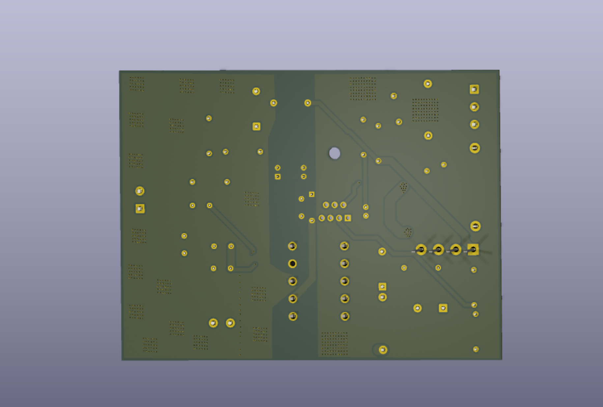
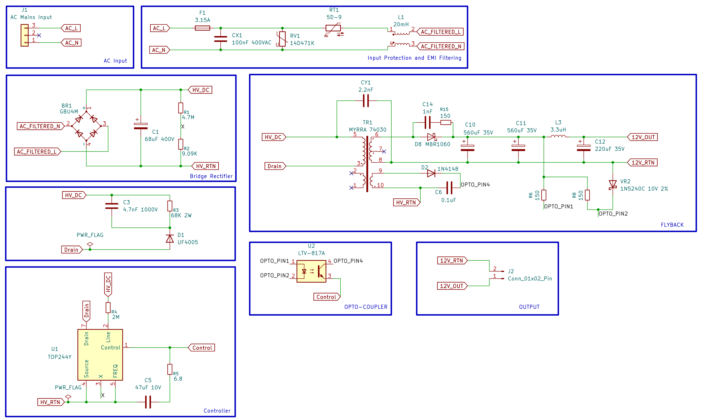

Overview
This project implements a complete offline switch-mode power supply built
around the TOP244Y integrated PWM controller in an isolated flyback
topology. The design covers the full signal chain from mains input to
regulated isolated DC output: EMI filtering, surge protection, the
flyback conversion stage itself, isolated feedback, and dual regulated
outputs — all laid out as a manufacturing-ready two-layer PCB in KiCad 9.
KiCad 9TOP244YFlybackIsolated FeedbackEMI Filtering
Specifications
| Input Voltage | 85–265 VAC |
| Output 1 | 12V @ 2.5A |
| Output 2 | 5V @ 1A |
| Output Power | 30W |
| Isolation | 4 kV |
| Topology | Flyback |
| Controller IC | TOP244Y |
| Transformer | MYRRA 74030 |
| PCB Layers | 2 |
Functional Overview
AC Input Stage
- Universal AC input with fuse protection
- MOV surge suppressor
- Common-mode choke
- X and Y class safety capacitors for EMI suppression
High Voltage DC Bus
- Full bridge rectifier
- Bulk electrolytic capacitor for DC filtering
Flyback Converter
- TOP244Y offline switching controller
- MYRRA 74030 flyback transformer
- Auxiliary winding for self-powered controller bias
Protection Networks
- Primary RCD snubber to clamp transformer leakage spikes
- Secondary RC snubber to reduce ringing and EMI
Output Stage
- MBR1060 Schottky rectification
- LC output filtering for low ripple 12V output
Feedback Network
- LTV817A optocoupler
- Zener reference network
- Closed-loop isolated voltage regulation
Additional Output
- Buck converter generating a regulated 5V rail from the 12V output
PCB Design Highlights
- Two-layer PCB with custom transformer footprint and schematic symbol
- Wide power traces for high-current paths
- Dedicated primary HV_RETURN copper pour and separate secondary return plane
- Isolation barrier maintained between primary and secondary
- Creepage and clearance maintained across the isolation boundary
- Optimized placement for reduced switching loop area
- 3D PCB model and manufacturing-ready Gerber generation
Gallery



Repository Structure
Hardware/
├── universal_30w_smps.kicad_pro
├── universal_30w_smps.kicad_sch
├── universal_30w_smps.kicad_pcb
└── MYRRA.pretty/
Manufacturing/
├── Gerbers
└── Drill Files
Images/
├── PCB_Front.png
├── PCB_Back.png
└── schematic.png
3D Models/
README.md
Design Tools
KiCad 9Custom KiCad LibrariesGit & GitHub
Future Improvements
- Thermal analysis
- Efficiency characterization
- EMI compliance testing
- Hardware validation
- Oscilloscope waveform measurements
- Short-circuit and overload testing